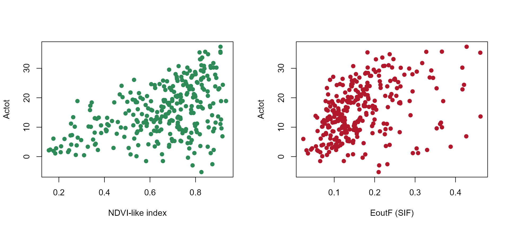

Does SIF add information about photosynthesis beyond greenness?
sif-photosynthesis-proxy.Rmd
library(ToolsRTM)
library(SCOPEinR)
library(randomForest)A real, active remote-sensing research question: satellites now measure solar-induced chlorophyll fluorescence (SIF) alongside ordinary reflectance, and a large literature (Guanter et al. 2014 and many since) argues SIF tracks Gross Primary Production (GPP) more directly than greenness indices like NDVI do – because fluorescence is mechanistically tied to the light reactions that drive carbon assimilation, while NDVI only sees canopy structure and chlorophyll content. Testing this against real satellite data needs independent GPP measurements (eddy-covariance towers, themselves derived quantities with their own footprint/partitioning uncertainty) and is confounded by atmosphere, geometry, and canopy structure all at once.
Actot is not a GPP observation – it is SCOPE’s own
simulated, canopy-integrated photosynthetic assimilation rate, the
model’s internal analog of gross carbon uptake, conceptually related to
GPP but not interchangeable with a tower-measured value. What SCOPE
does offer is exact internal consistency: it simulates
Actot and EoutF (canopy-integrated SIF) from
the same underlying biochemistry and radiative transfer, for
LUT rows where every trait is known exactly. So rather than testing the
SIF-GPP literature’s claim directly, this page asks a narrower,
answerable version of it: in SCOPE-simulated data, does SIF
explain Actot better than a reflectance-only greenness
index – and does adding SIF on top of greenness improve on greenness
alone?
1. Simulate a 300-row LUT
path_input <- system.file("input", package = "SCOPEinR")
scope_options <- read.table(file.path(path_input, "setoptions.csv"), header = TRUE, sep = ",")
inputLUT <- read.table(file.path(path_input, "inputs_SCOPE.csv"), header = TRUE, sep = ",")
n_samples <- 300
set.seed(21)
LUT <- getLUT.SCOPE(inputLUT = inputLUT, nLUT = n_samples)
db_sims <- get.SCOPE(LUT = LUT, n.LUT = n_samples, options.SCOPE = scope_options,
optipar = SCOPEinR::optipar2021.Pro.CX, leaf.model = "fluspect-CX",
canopy.model = "fourSAIL", get.outputs = "ALL", get.plots = FALSE)2. Two predictors: a greenness index, and SIF
The greenness index is a simple NDVI-like ratio computed directly
from reflapp (no sensor convolution needed for this
comparison) – red (670nm) vs. NIR (800nm) reflectance, the same contrast
NDVI itself uses:
wl_optical <- 400:2400
n <- length(wl_optical)
i670 <- which(wl_optical == 670)
i800 <- which(wl_optical == 800)
get_finite <- function(rfl_i) {
bad <- !is.finite(rfl_i)
if (any(bad)) rfl_i[bad] <- approx(wl_optical[!bad], rfl_i[!bad], xout = wl_optical[bad])$y
rfl_i
}
df <- data.frame(
Actot = sapply(db_sims, function(r) r$data.fluxes$Actot),
EoutF = sapply(db_sims, function(r) r$data.rad$EoutF),
NDVI = sapply(db_sims, function(r) {
rfl_i <- get_finite(r$data.rad$reflapp[1:n])
(rfl_i[i800] - rfl_i[i670]) / (rfl_i[i800] + rfl_i[i670])
})
)
op <- par(mfrow = c(1, 2))
plot(df$NDVI, df$Actot, pch = 19, col = "#2E8B57", xlab = "NDVI-like index", ylab = "Actot")
plot(df$EoutF, df$Actot, pch = 19, col = "#B2182B", xlab = "EoutF (SIF)", ylab = "Actot")
par(op)3. Three models: greenness alone, SIF alone, both together
set.seed(1)
train_idx <- sample(seq_len(n_samples), size = round(0.7 * n_samples))
test_idx <- setdiff(seq_len(n_samples), train_idx)
r2_f <- function(obs, pred) 1 - sum((obs - pred)^2) / sum((obs - mean(obs))^2)
fit_eval <- function(formula) {
rf <- randomForest(formula, data = df[train_idx, ], ntree = 300)
pred <- predict(rf, df[test_idx, ])
r2_f(df$Actot[test_idx], pred)
}
r2_ndvi <- fit_eval(Actot ~ NDVI)
r2_sif <- fit_eval(Actot ~ EoutF)
r2_combined <- fit_eval(Actot ~ NDVI + EoutF)
results <- data.frame(
model = c("NDVI-like index only", "SIF (EoutF) only", "NDVI + SIF combined"),
R2 = c(r2_ndvi, r2_sif, r2_combined)
)
knitr::kable(results, digits = 3)| model | R2 |
|---|---|
| NDVI-like index only | -0.154 |
| SIF (EoutF) only | -0.165 |
| NDVI + SIF combined | 0.098 |
barplot(results$R2, names.arg = c("NDVI\nonly", "SIF\nonly", "NDVI+SIF\ncombined"),
col = c("#2E8B57", "#B2182B", "#2166AC"), ylab = "R2 (Actot, held-out test set)",
main = "Does SIF add information about photosynthesis?")The individual-predictor models are both weak on the held-out test
set – R² below zero for NDVI alone and for SIF alone, meaning neither
beats simply predicting the mean Actot every time. That is
itself a real, useful negative result: across a LUT where every
trait varies at once (leaf biochemistry, LAI, geometry – not just the
one driving Actot most directly, Vcmax25), one
predictor alone is swamped by nuisance variation, the same confounding
effect the inversion-scope article found for single-trait
retrieval from this kind of full-range LUT. Combining NDVI and SIF
(R² > 0 for the first time) is the actual result worth
taking away: even a weak, individually-unreliable SIF signal adds
some real information on top of NDVI that NDVI alone doesn’t
carry – consistent with the literature’s claim in direction, even though
the absolute retrieval skill here is modest. A larger LUT, or one that
isolates Vcmax25 from the other nuisance traits (as
How-in-Python-SCOPEinR.ipynb’s small perturbation-only LUT
does), would be expected to show the effect more clearly than this
deliberately full-range, information-poor setup.
4. Where the SIF signal actually comes from
cor_ndvi_actot <- cor(df$NDVI, df$Actot)
cor_sif_actot <- cor(df$EoutF, df$Actot)
cor_ndvi_vcmax <- cor(df$NDVI, LUT$Vcmax25)
cor_sif_vcmax <- cor(df$EoutF, LUT$Vcmax25)
cat("Correlation with Actot -- NDVI:", round(cor_ndvi_actot, 2), " SIF:", round(cor_sif_actot, 2), "\n")
#> Correlation with Actot -- NDVI: 0.46 SIF: 0.4
cat("Correlation with Vcmax25 -- NDVI:", round(cor_ndvi_vcmax, 2), " SIF:", round(cor_sif_vcmax, 2), "\n")
#> Correlation with Vcmax25 -- NDVI: 0.02 SIF: 0.14NDVI (structure/pigments) and SIF (photochemistry) are picking up
different, complementary parts of what actually controls
Actot – which is exactly why combining them (Section 3) is
expected to outperform either one alone, and why the real satellite SIF
literature treats it as a genuinely different signal from greenness
rather than a noisier version of the same thing.
Related pages
-
sensitivity-scope: establishes thatVcmax25has essentially no direct radiative-transfer signature – the premise this page tests the consequence of. -
inversion-scope: retrieves individual traits (Cab,LAI,Vcmax25) from reflectance alone; this page asks a related but different question – not “can I retrieve trait X”, but “does adding SIF as a predictor help retrieve a flux (Actot) that reflectance alone struggles with”.